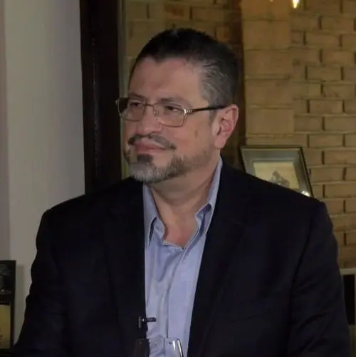

Rodrigo Chaves
Rodrigo Alberto de Jesús Chaves Robles (San José, 10 de junio de 1961) es un economista costarricense y exfuncionario de carrera del Banco Mundial. Es el 49° presidente de la República de Costa Rica desde el 8 de mayo de 2022 por el Partido Progreso Social Democrático. Fue ministro de Hacienda, durante el gobierno de Carlos Alvarado Quesada, entre 2019 y 2020. Fue candidato a la Presidencia de Costa Rica, por el Partido Progreso Social Democrático.
En julio de 2021, Chaves anunció su candidatura para la Presidencia de la República de Costa Rica bajo la bandera del Partido Progreso Social Democrático, una agrupación de tendencia socialdemócrata fundada en 2018 liderada por el exministro de Hacienda y actual presidente de Costa Rica, Rodrigo Chaves Robles con la periodista y diputada Pilar Cisneros Gallo.
Según Chaves, la ideología del partido expresa que desea bajar los impuestos pero mantener políticas sociables sostenibles, también ayudar a las empresas y dar beneficios a los agricultores yendo en contra de los monopolios, promover mejoras en el precio de la cesta de la compra -en productos como el arroz- y estar en contra de la excesiva burocracia en los trámites con las instituciones. También pretende reducir el gasto público cerrando organismos gubernamentales.En el ámbito social y ambiental, afirma que su gobierno luchará contra el altísimo nivel de paro con una mejora de la inversión en un turismo más competitivo, afirma que no está en contra del legalización de la marihuana ya que trae beneficios económicos y sociales, pero afirma tener una percepción desfavorable de la despenalización del aborto.